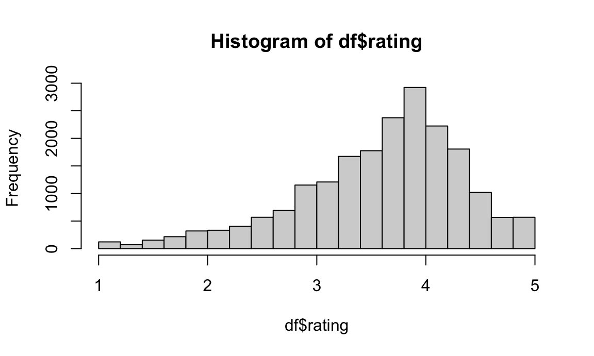
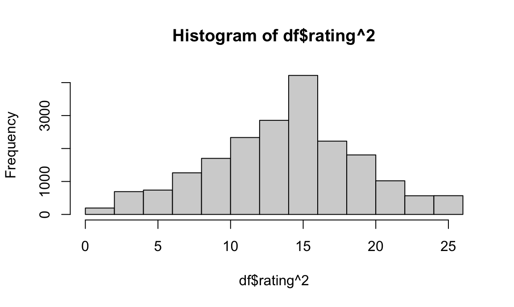

library(readr)
dt = read_csv("data/inspection_sub_all_date.csv")## Warning: One or more parsing issues, call `problems()` on your data frame
## for details, e.g.:
## dat <- vroom(...)
## problems(dat)## Rows: 54562 Columns: 32
## ── Column specification ──────────────────────────────────────────
## Delimiter: ","
## chr (17): dba, boro, building, street, cuisine_description, action, violati...
## dbl (12): camis, zipcode, phone, score, latitude, longitude, community_boar...
## date (3): inspection_date, grade_date, record_date
##
## ℹ Use `spec()` to retrieve the full column specification for this data.
## ℹ Specify the column types or set `show_col_types = FALSE` to quiet this message.df = read_csv("data/inspection_sub_latest_date.csv") %>%
mutate(price = fct_recode(price, `1`="$", `2`="$$", `3`="$$$", `4`="$$$$"),
boro = fct_reorder(boro, rating),
grade = fct_relevel(grade, "A")) ## Rows: 20181 Columns: 32
## ── Column specification ──────────────────────────────────────────
## Delimiter: ","
## chr (18): dba, boro, building, street, phone, cuisine_description, grade, i...
## dbl (11): camis, zipcode, score, latitude, longitude, community_board, bin,...
## date (3): inspection_date, grade_date, record_date
##
## ℹ Use `spec()` to retrieve the full column specification for this data.
## ℹ Specify the column types or set `show_col_types = FALSE` to quiet this message.df %>%
select(boro, score, grade, rating, review_num, price) %>%
tbl_summary(
missing_text = "(Missing)",
statistic = list(
all_continuous() ~ "{mean} ({sd})",
all_categorical() ~ "{n} ({p}%)"
)) %>%
bold_labels() %>%
italicize_levels() | Characteristic | N = 20,1811 |
|---|---|
| boro | |
| Bronx | 1,400 (6.9%) |
| Staten Island | 725 (3.6%) |
| Queens | 4,546 (23%) |
| Brooklyn | 5,391 (27%) |
| Manhattan | 8,119 (40%) |
| score | 24 (16) |
| (Missing) | 169 |
| grade | |
| A | 6,815 (55%) |
| B | 507 (4.1%) |
| C | 286 (2.3%) |
| N | 2,508 (20%) |
| Z | 2,333 (19%) |
| (Missing) | 7,732 |
| rating | 3.63 (0.76) |
| review_num | 218 (488) |
| price | |
| 1 | 6,906 (35%) |
| 2 | 11,117 (57%) |
| 3 | 1,244 (6.4%) |
| 4 | 191 (1.0%) |
| (Missing) | 723 |
| 1 n (%); Mean (SD) | |
We try to determine whether there is a relationship between boroughs and restaurants’ inspection grades. Our hypothesis is that there is no difference in the number of restaurants across the five grades across the five boroughs in NYC. We will perform the chi-square test to verify our assumption.
\(H0\): the expected number of restaurants in each grades are the same across all boroughs.
\(H1\): the expected number of restaurants in each grades are not same across all boroughs.
grade_boro =
df %>%
drop_na(grade) %>%
count(boro, grade) %>%
pivot_wider(
names_from = "grade",
values_from = "n") %>%
replace(is.na(.), 0) %>%
data.matrix() %>%
subset(select = -c(boro))
rownames(grade_boro) <- c("Bronx", "Staten Island", "Queens", "Brooklyn", "Manhattan")
grade_boro %>%
knitr::kable(caption = "Results Table")| A | B | C | N | Z | |
|---|---|---|---|---|---|
| Bronx | 431 | 30 | 53 | 169 | 96 |
| Staten Island | 363 | 17 | 0 | 106 | 49 |
| Queens | 1449 | 125 | 79 | 544 | 381 |
| Brooklyn | 1880 | 171 | 52 | 607 | 690 |
| Manhattan | 2692 | 164 | 102 | 1082 | 1117 |
chisq.test(grade_boro)##
## Pearson's Chi-squared test
##
## data: grade_boro
## X-squared = 251.11, df = 16, p-value < 2.2e-16Interpretation: The result of chi-square shows that p-value is less than 0.05, so we reject the null hypothesis at 95% significant level and conclude that the inspection grades of restaurants are significantly different by boroughs.
Now, we want to see whether receiving grade A is equally common among restaurants of all four price scales. To do this, we will conduct a proportion test.
total = df %>%
group_by(price) %>%
summarise(total = n())
n_a = df %>%
count(price, grade) %>%
filter(grade == "A")
join = left_join(total, n_a) %>% drop_na()## Joining, by = "price"prop.test(join$n, join$total)##
## 4-sample test for equality of proportions without continuity correction
##
## data: join$n out of join$total
## X-squared = 94.095, df = 3, p-value < 2.2e-16
## alternative hypothesis: two.sided
## sample estimates:
## prop 1 prop 2 prop 3 prop 4
## 0.3763394 0.3124944 0.3344051 0.4764398#join = join %>%
# mutate(prop = n/total) %>%
# select(price, prop)From the test result, we can see that the p-value is less than 0.05,
total = df %>%
select(boro, score, grade, rating, review_num, price) %>%
drop_na(price, grade) %>%
group_by(price) %>%
summarise(sum = n())
price_grade = df %>%
select(boro, score, grade, rating, review_num, price) %>%
drop_na(price, grade) %>%
group_by(price, grade) %>%
summarise(n = n())## `summarise()` has grouped output by 'price'. You can override
## using the `.groups` argument.left_join(price_grade, total) %>%
mutate(prop = n/sum) %>%
pivot_wider(
names_from = grade,
values_from = prop
) %>%
replace(is.na(.), 0) %>%
data.matrix() %>%
subset(select = -c(price))## Joining, by = "price"## n sum A B C N Z
## [1,] 2599 4392 0.5917577 0.00000000 0.00000000 0.0000000 0.00000000
## [2,] 234 4392 0.0000000 0.05327869 0.00000000 0.0000000 0.00000000
## [3,] 123 4392 0.0000000 0.00000000 0.02800546 0.0000000 0.00000000
## [4,] 588 4392 0.0000000 0.00000000 0.00000000 0.1338798 0.00000000
## [5,] 848 4392 0.0000000 0.00000000 0.00000000 0.0000000 0.19307832
## [6,] 3474 6667 0.5210739 0.00000000 0.00000000 0.0000000 0.00000000
## [7,] 239 6667 0.0000000 0.03584821 0.00000000 0.0000000 0.00000000
## [8,] 158 6667 0.0000000 0.00000000 0.02369882 0.0000000 0.00000000
## [9,] 1477 6667 0.0000000 0.00000000 0.00000000 0.2215389 0.00000000
## [10,] 1319 6667 0.0000000 0.00000000 0.00000000 0.0000000 0.19784011
## [11,] 416 803 0.5180573 0.00000000 0.00000000 0.0000000 0.00000000
## [12,] 13 803 0.0000000 0.01618929 0.00000000 0.0000000 0.00000000
## [13,] 4 803 0.0000000 0.00000000 0.00498132 0.0000000 0.00000000
## [14,] 272 803 0.0000000 0.00000000 0.00000000 0.3387298 0.00000000
## [15,] 98 803 0.0000000 0.00000000 0.00000000 0.0000000 0.12204234
## [16,] 91 129 0.7054264 0.00000000 0.00000000 0.0000000 0.00000000
## [17,] 34 129 0.0000000 0.00000000 0.00000000 0.2635659 0.00000000
## [18,] 4 129 0.0000000 0.00000000 0.00000000 0.0000000 0.03100775To perform any regression model, we first perform test of normality on the response variable, ratings. We first plot a histogram on the data, from which we can see that the response variable is not exactly normally distributed and slightly skewed to the left. We confirm this deviation from normality by conducting the Kolmogorov-Smirnov test for normality. To adjust for this factor, we transform the rating variable by squaring it. As we may see in the histogram, the square-adjusted variable is approximately normal.
# plot histogram
hist(df$rating)
# Kolmogorov-Smirnov test
ks.test(df$rating, 'pnorm')## Warning in ks.test.default(df$rating, "pnorm"): ties should not be present for
## the Kolmogorov-Smirnov test##
## Asymptotic one-sample Kolmogorov-Smirnov test
##
## data: df$rating
## D = 0.94445, p-value < 2.2e-16
## alternative hypothesis: two-sided# plot histogram for square-transformed data
hist(df$rating^2)
df %>%
select(boro, score, grade, rating, review_num, price) %>%
summary()## boro score grade rating
## Bronx :1400 Min. : 0.00 A :6815 Min. :1.000
## Staten Island: 725 1st Qu.:12.00 B : 507 1st Qu.:3.200
## Queens :4546 Median :22.00 C : 286 Median :3.800
## Brooklyn :5391 Mean :23.68 N :2508 Mean :3.634
## Manhattan :8119 3rd Qu.:32.00 Z :2333 3rd Qu.:4.200
## Max. :95.00 NA's:7732 Max. :5.000
## NA's :169
## review_num price
## Min. : 1.0 1 : 6906
## 1st Qu.: 21.0 2 :11117
## Median : 73.0 3 : 1244
## Mean : 217.9 4 : 191
## 3rd Qu.: 227.0 NA's: 723
## Max. :14333.0
## lm(rating ~ grade*price, data = df)##
## Call:
## lm(formula = rating ~ grade * price, data = df)
##
## Coefficients:
## (Intercept) gradeB gradeC gradeN gradeZ
## 3.2680 0.4119 0.6385 0.4016 0.2378
## price2 price3 price4 gradeB:price2 gradeC:price2
## 0.4999 0.6815 0.5968 -0.5706 -1.1381
## gradeN:price2 gradeZ:price2 gradeB:price3 gradeC:price3 gradeN:price3
## -0.3112 -0.3937 -1.2461 -0.2880 -0.4015
## gradeZ:price3 gradeB:price4 gradeC:price4 gradeN:price4 gradeZ:price4
## -0.6353 NA NA 0.1689 0.1974